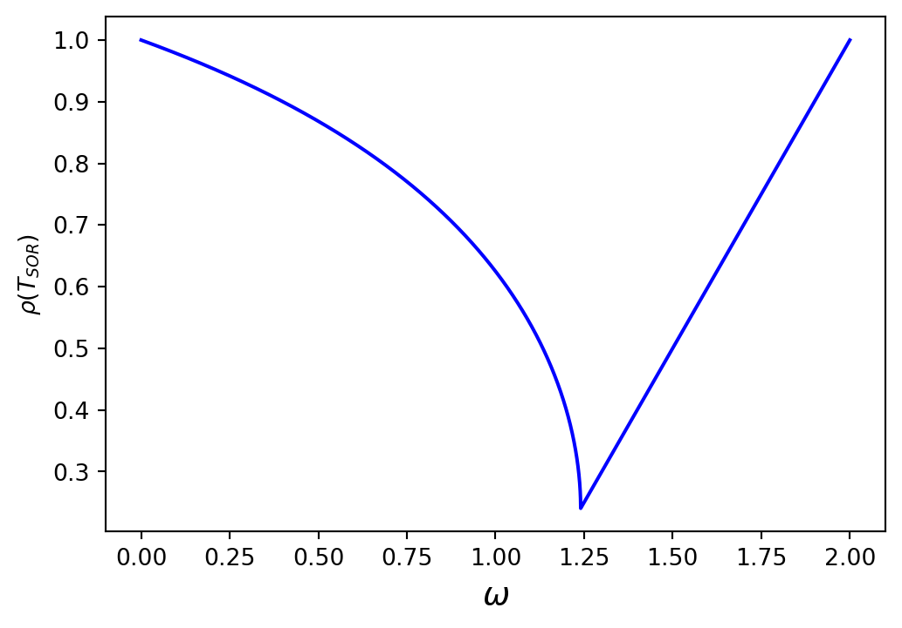

6G6Z3017 Computational Methods in ODEs
A system of linear equations is of the form \(A \mathbf{x} = \mathbf{b}\).
Over the two previous weeks we have looked at direct methods for solving systems of linear equations, so-called because a solution is directly obtained.
This week we will look at indirect methods, which use an iterative approach
\[ \mathbf{x}^{(k+1)} = T \mathbf{x}^{(k)} + \mathbf{c}, \]
where \(\mathbf{x}^{(k)}\) and \(\mathbf{x}^{(k+1)}\) are the current and improved estimates of \(\mathbf{x}\) respectively, \(T\) is an iteration matrix and \(\mathbf{c}\) is some vector
The three methods we will look at are:
Given a system of linear equations \(A \mathbf{x} = \mathbf{b}\) such that
\[\begin{align*} \begin{pmatrix} a_{11} & a_{12} & \cdots & a_{1n} \\ a_{21} & a_{22} & \cdots & a_{2n} \\ \vdots & \vdots & \ddots & \vdots \\ a_{n1} & a_{n2} & \cdots & a_{nn} \end{pmatrix} \begin{pmatrix} x_1 \\ x_2 \\ \vdots \\ x_n \end{pmatrix} = \begin{pmatrix} b_1 \\ b_2 \\ \vdots \\ b_n \end{pmatrix} \end{align*}\]
The Jacobi method is \[ x_i^{(k+1)} = \frac{1}{a_{ii}} \left( b_i - \sum_{j = 1,j \neq i}^n a_{ij} x_j^{(k)} \right), \qquad i = 1, \ldots ,n. \]
where \(x_i^{(k+1)}\) and \(x_i^{(k)}\) are the next and current estimates of \(x_i\).
To derive the iteration matrix for the Jacobi method we let \(A\) be the sum of lower triangular matrix \(L\), a diagonal matrix \(D\) and an upper triangular matrix \(U\) such that \(A = L + D + U\).
Substituting into \(A \mathbf{x} = \mathbf{b}\) and rearranging gives
\[ \begin{align*} (L+D+U)\mathbf{x} &= \mathbf{b} \\ D\mathbf{x} &= \mathbf{b}-(L+U)\mathbf{x} \\ \mathbf{x} & = -D^{-1}(L + x) \mathbf{x} + D^{-1} \mathbf{b} \end{align*} \]
Let the \(\mathbf{x}\) vector on the left-hand side be the new estimate and the one on the right-hand side be the current estimate then the Jacobi method is
\[ \mathbf{x}^{(k+1)} = -D^{-1}(L + x^{(k)}) \mathbf{x} + D^{-1} \mathbf{b} \]
Therefore the iteration matrix for the Jacobi method is
\[T_J = -D^{-1}(L + x^{(k)}) \]
(We’ll be needing this later)
The Jacobi method is applied by iterating until the estimate \(\mathbf{x}^{(k+1)}\) is accurate enough for our needs.
Since we do not know what the exact solution is, we need a way to estimate the error in our approximations.
If \(\mathbf{e}^{(k)}\) is the error of the \(k\)th iteration then
\[ \mathbf{x} = \mathbf{x}^{(k)} + \mathbf{e}^{(k)}\]
Substituting this into the linear system \(A\mathbf{x} = \mathbf{b}\) and rearranging gives
\[ \begin{align*} A (\mathbf{x}^{(k)} +\mathbf{e}^{(k)}) &= \mathbf{b} \\ A\mathbf{e}^{(k)} &= \mathbf{b} - A\mathbf{x}^{(k)}. \end{align*} \]
\(\mathbf{r}^{(k)} = A\mathbf{e}^{(k)}\) is an \(n \times 1\) column vector known as the residual. As \(k \to \infty\), \(\mathbf{r} \to \mathbf{0}\) so \(\mathbf{x}^{(k)} \to \mathbf{x}\).
For a given accuracy tolerance \(tol\) we cease iterating when
\[ \max (|\mathbf{r}|) < tol \]
Calculate the solution to the following system of linear equations using the Jacobi method with an accuracy tolerance of \(tol = 10^{-4}\)
\[ \begin{align*} 4x_1 +3x_2 &=-2, \\ 3x_1 +4x_2 -x_3 &=-8, \\ -x_2 +4x_3 &=14. \end{align*} \]
Solution:
Rearranging each equation to make the diagonal elements the subject gives the Jacobi method for this system
\[ \begin{align*} x_{1}^{(k+1)} &= \frac{1}{4} \left( -2 - 3 x_{2}^{(k)} \right), \\ x_{2}^{(k+1)} &= \frac{1}{4} \left( -8 - 3 x_{1}^{(k)} + x_{3}^{(k)} \right), \\ x_{3}^{(k+1)} &= \frac{1}{4} \left( 14 + x_{2}^{(k)} \right). \end{align*} \]
Using starting values of \(\mathbf{x} = \mathbf{0}\). Calculating the first iteration
\[ \begin{align*} x_{1}^{(1)} &= \frac{1}{4} \left( -2 - 3 (-2.0) \right) = -0.5, \\ x_{2}^{(1)} &= \frac{1}{4} \left( -8 - 3 (-0.5) + -3.5 \right) = -2.0, \\ x_{3}^{(1)} &= \frac{1}{4} \left( 14 + 2.0 \right) = 3.5. \end{align*} \]
Calculate the residual
\[ \begin{align*} \mathbf{r}^{(1)} = \mathbf{b} - A \mathbf{x}^{(1)} = \begin{pmatrix} -2 \\ -8 \\ 14 \end{pmatrix} - \begin{pmatrix} 4 & 3 & 0 \\ 3 & 4 & -1 \\ 0 & -1 & 4 \end{pmatrix} \begin{pmatrix} -0.5 \\ -2.0 \\ 3.5 \end{pmatrix} = \begin{pmatrix} 6.0 \\ 5.0 \\ -2.0 \end{pmatrix}. \end{align*} \]
Since \(\max(| \mathbf{r}^{(1)} |) = 6.0 > 10^{-4}\) we continue iterating.
Calculating the second iteration
\[ \begin{align*} x_{1}^{(2)} &= \frac{1}{4} \left( -2 - 3 (-0.75) \right) = 1.0, \\ x_{2}^{(2)} &= \frac{1}{4} \left( -8 - 3 (1.0) + -3.0 \right) = -0.75, \\ x_{3}^{(2)} &= \frac{1}{4} \left( 14 + 0.75 \right) = 3.0. \end{align*} \]
Calculate the residual
\[ \begin{align*} \mathbf{r}^{(2)} = \mathbf{b} - A \mathbf{x}^{(1)} = \begin{pmatrix} -2 \\ -8 \\ 14 \end{pmatrix} - \begin{pmatrix} 4 & 3 & 0 \\ 3 & 4 & -1 \\ 0 & -1 & 4 \end{pmatrix} \begin{pmatrix} 1.0 \\ -0.75 \\ 3.0 \end{pmatrix} = \begin{pmatrix} -3.75 \\ -5.0 \\ 1.25 \end{pmatrix}. \end{align*} \]
Since \(\max(| \mathbf{r}^{(2)} |) = 5 > 10^{-4}\) we continue iterating.
The Jacobi method was iterated until \(\max(|\mathbf{r}|) < 10^{-4}\) and a selection of the iteration values are given in the table below.
| \(k\) | \(x_{1}\) | \(x_{2}\) | \(x_{3}\) | \(\max(|\mathbf{r}|)\) |
|---|---|---|---|---|
| 0 | 0.000000 | 0.000000 | 0.000000 | 14.000000 |
| 1 | -0.500000 | -2.000000 | 3.500000 | 6.00e+00 |
| 2 | 1.000000 | -0.750000 | 3.000000 | 5.00e+00 |
| 3 | 0.062500 | -2.000000 | 3.312500 | 3.75e+00 |
| 4 | 1.000000 | -1.218750 | 3.000000 | 3.12e+00 |
| 5 | 0.414062 | -2.000000 | 3.195312 | 2.34e+00 |
| \(\vdots\) | \(\vdots\) | \(\vdots\) | \(\vdots\) | \(\vdots\) |
| 48 | 1.000000 | -1.999975 | 3.000000 | 1.01e-04 |
| 49 | 0.999981 | -2.000000 | 3.000006 | 7.57e-05 |
With the Jacobi method we only every use the current estimates even when we have calculated new estimates in the current iteration
\[ \begin{align*} x_i^{(k+1)} &= \frac{1}{a_{ii}} \left( b_i - \underset{\mathsf{already\,calculated}}{(a_{i1} x_1^{(k)} - \cdots - a_{i,j-1} x_{j-1}^{(k)})} - \underset{\mathsf{yet\, to\, be\, calculated}}{(a_{i,j+1} x_{j+1}^{(k)} - \cdots - a_{in} x_n^{(k)})} \right) \end{align*} \]
We can improve the speed of which the Jacobi method converges by using these new values to calculate \(x_i^{(k+1)}\) which is the Gauss-Seidel method
\[ x_i^{(k+1)} = \frac{1}{a_{ii} }\left(b_i - \sum_{j=1}^{i-1} a_{ij} x_j^{(k+1)} -\sum_{j=i+1}^n a_{ij} x_j^{(k)} \right), \qquad i=1, \ldots , n \]
The iteration matrix for the Gauss-Seidel method can be found by rearranging \((L+D+U)\mathbf{x}=\mathbf{b}\)
\[ \begin{align*} (L+D+U)\mathbf{x} &= \mathbf{b} \\ (L+D)\mathbf{x} &= -U\mathbf{x} + \mathbf{b} \\ \mathbf{x}&= -(L+D)^{-1} U \mathbf{x} + (L + D)^{-1} \mathbf{b}. \end{align*} \]
So the matrix equation for the Gauss-Seidel method is
\[ \begin{align*} \mathbf{x}^{(k+1)} =-(L+D)^{-1} U\mathbf{x}^{(k)} +(L+D)^{-1} \mathbf{b}, \end{align*} \]
and the iteration matrix is
\[ T_{GS} =-(L+D)^{-1} U. \]
Calculate the solution to the system of linear equations shown below using the Gauss-Seidel method with an accuracy tolerance of \(tol = 10^{-4}\)
\[ \begin{align*} 4x_1 +3x_2 &=-2,\\ 3x_1 +4x_2 -x_3 &=-8,\\ -x_2 +4x_3 &=14. \end{align*} \]
Solution: The Gauss-Seidel method for this system is
\[ \begin{align*} x_{1}^{(k+1)} &= \frac{1}{4} \left( -2 - 3 x_{2}^{(k)} \right), \\ x_{2}^{(k+1)} &= \frac{1}{4} \left( -8 - 3 x_{1}^{(k+1)} + x_{3}^{(k)} \right), \\ x_{3}^{(k+1)} &= \frac{1}{4} \left( 14 + x_{2}^{(k+1)} \right). \end{align*} \]
Using starting values of \(\mathbf{x} = \mathbf{0}\). Calculating the first iteration
\[ \begin{align*} x_{1}^{(1)} &= \frac{1}{4} \left( -2 - 3 (-1.625) \right) = -0.5, \\ x_{2}^{(1)} &= \frac{1}{4} \left( -8 - 3 (-0.5) + -3.09375 \right) = -1.625, \\ x_{3}^{(1)} &= \frac{1}{4} \left( 14 + 1.625 \right) = 3.09375. \end{align*} \]
Calculate the residual
\[ \begin{align*} \mathbf{r}^{(1)} = \mathbf{b} - A \mathbf{x}^{(1)} = \begin{pmatrix} -2 \\ -8 \\ 14 \end{pmatrix} - \begin{pmatrix} 4 & 3 & 0 \\ 3 & 4 & -1 \\ 0 & -1 & 4 \end{pmatrix} \begin{pmatrix} -0.5 \\ -1.625 \\ 3.09375 \end{pmatrix} = \begin{pmatrix} 4.875 \\ 3.09375 \\ 0.0 \end{pmatrix}. \end{align*} \]
Since \(\max(| \mathbf{r}^{(1)} |) = 4.875 > 10^{-4}\) we continue iterating.
Calculating the second iteration
\[ \begin{align*} x_{1}^{(2)} &= \frac{1}{4} \left( -2 - 3 (-1.765625) \right) = 0.71875, \\ x_{2}^{(2)} &= \frac{1}{4} \left( -8 - 3 (0.71875) + -3.058594 \right) = -1.765625, \\ x_{3}^{(2)} &= \frac{1}{4} \left( 14 + 1.765625 \right) = 3.058594. \end{align*} \]
Calculate the residual
\[ \begin{align*} \mathbf{r}^{(2)} = \mathbf{b} - A \mathbf{x}^{(1)} = \begin{pmatrix} -2 \\ -8 \\ 14 \end{pmatrix} - \begin{pmatrix} 4 & 3 & 0 \\ 3 & 4 & -1 \\ 0 & -1 & 4 \end{pmatrix} \begin{pmatrix} 0.71875 \\ -1.765625 \\ 3.058594 \end{pmatrix} = \begin{pmatrix} 0.421875 \\ -0.035156 \\ 0 \end{pmatrix}. \end{align*} \]
Since \(\max(| \mathbf{r}^{(2)} |) = 0.421875 > 10^{-4}\) we continue iterating.
The Gauss-Seidel method was iterated until \(\max |\mathbf{r}| < 10^{-4}\) and a selection of the iteration values are given in the table below.
| \(k\) | \(x_{1}\) | \(x_{2}\) | \(x_{3}\) | \(\max( \| \mathbf{r} \|)\) |
|---|---|---|---|---|
| 0 | 0.000000 | 0.000000 | 0.000000 | 14.000000 |
| 1 | -0.500000 | -1.625000 | 3.093750 | 4.88e+00 |
| 2 | 0.718750 | -1.765625 | 3.058594 | 4.22e-01 |
| 3 | 0.824219 | -1.853516 | 3.036621 | 2.64e-01 |
| 4 | 0.890137 | -1.908447 | 3.022888 | 1.65e-01 |
| 5 | 0.931335 | -1.942780 | 3.014305 | 1.03e-01 |
| \(\vdots\) | \(\vdots\) | \(\vdots\) | \(\vdots\) | |
| 19 | 0.999905 | -1.999921 | 3.000020 | 1.43e-04 |
| 20 | 0.999940 | -1.999950 | 3.000012 | 8.93e-05 |
The Gauss-Seidel method took 20 iterations to achieve convergence to \(tol=10^{-4}\) whereas the Jacobi method took 49 iterations to achieve the same accuracy.
Let \(\mathbf{e}^{(k)} = \|\mathbf{x} - \mathbf{x}^{(k)}\|\) be the error between the exact solution \(\mathbf{x}\) and the estimate \(\mathbf{x}^{(k)}\) then
\[ \mathbf{e}^{(k+1)} = T\mathbf{e}^{(k)}. \]
We can write the first error, \(\mathbf{e}^{(0)}\) as a linear combination of some vectors \(\mathbf{v}_i\)
\[ \mathbf{e}^{(0)} =\alpha_1 \mathbf{v}_1 +\alpha_2 \mathbf{v}_2 +\cdots +\alpha_n \mathbf{v}_n =\sum_{i=1}^n \alpha_i \mathbf{v}_i, \]
where \(\alpha_i\) are scalars. If \(\mathbf{v}_i\) are the eigenvalues of \(T\) with eigenvalues \(\lambda_i\) so \(T\mathbf{v}_i = \lambda_i \mathbf{v}_i\) then
\[ \begin{align*} \mathbf{e}^{(1)} &= T\mathbf{e}^{(0)} =T\left(\sum_{i=1}^n \alpha_i \mathbf{v}_i \right)=\sum_{i=1}^n \alpha_i T\mathbf{v}_i = \sum_{i=1}^n \alpha_i \lambda_i \mathbf{v}_i , \\ \mathbf{e}^{(2)} &=T\mathbf{e}^{(1)} =T\left(\sum_{i=1}^n \alpha_i \lambda_i \mathbf{v}_i \right)=\sum_{i=1}^n \alpha_i \lambda_i T\mathbf{v}_i =\sum_{i=1}^n \alpha_i \lambda_i^2 \mathbf{v}_i , \\ &\vdots \\ \mathbf{e}^{(k+1)} &=\sum_{i=1}^n \alpha_i \lambda_i^{k+1} \mathbf{v}_i . \end{align*} \]
If \(\lambda_1\) is the largest eigenvalue of \(T\) then
\[ \mathbf{e}^{(k+1)} =\alpha_1 \lambda_1^{k+1} \mathbf{v}_1 +\sum_{i=2}^n \alpha_i \lambda_i^{k+1} \mathbf{v}_i =\lambda_1^{k+1} \left(\alpha_1 \mathbf{v}_1 +\sum_{i=2}^n \alpha_i \mathbf{v}_i {\left(\frac{\lambda_i }{\lambda_1 }\right)}^{k+1} \right) \]
and since \(\dfrac{\lambda_i}{\lambda_ 1} < 1\) then
\[ \begin{align*} \lim_{k\to \infty } \mathbf{e}^{(k+1)} =\alpha_1 \lambda_1^{k+1} \mathbf{v}_1 . \end{align*} \]
This means that as the number of iterations increases, the error varies by a factor of \(\lambda_1^{k+1}\) where \(\lambda_1\) is the largest eigenvalue of \(T\) which is known as the spectral radius which is written as \(\rho(T)\).
If \(\rho (T) > 1\) then errors will increase over each iteration, therefore for an indirect method to converge to the solution we require \(\rho (T)< 1\).
The smaller the value of \(\rho (T)\) the faster the errors will tend to zero.
Show that the Jacobi and Gauss-Seidel methods are convergent of the system of linear equations shown below
\[ \begin{align*} 4x_1 +3x_2 &=-2, \\ 3x_1 +4x_2 -x_3 &=-8, \\ -x_2 +4x_3 &=14. \end{align*} \]
Solution: The coefficient matrix for this linear system is
\[ A = \begin{pmatrix} 4 & 3 & 0 \\ 3 & 4 & -1 \\ 0 & -1 & 4 \end{pmatrix}. \]
so
\[ \begin{align*} L &= \begin{pmatrix} 0 & 0 & 0 \\ 3 & 0 & 0 \\ 0 & -1 & 0 \end{pmatrix}, & D &= \begin{pmatrix} 4 & 0 & 0 \\ 0 & 4 & 0 \\ 0 & 0 & 4 \end{pmatrix}, & U &= \begin{pmatrix} 0 & 3 & 0 \\ 0 & 0 & -1 \\ 0 & 0 & 0 \end{pmatrix}. \end{align*} \]
The iteration matrix for the Jacobi method is \(T_J = -D^{-1}(L + U)\)
\[ \begin{align*} T_J &= -\begin{pmatrix} 4 & 0 & 0 \\ 0 & 4 & 0 \\ 0 & 0 & 4 \end{pmatrix} ^{-1} \left( \begin{pmatrix} 0 & 0 & 0 \\ 3 & 0 & 0 \\ 0 & -1 & 0 \end{pmatrix} + \begin{pmatrix} 0 & 3 & 0 \\ 0 & 0 & -1 \\ 0 & 0 & 0 \end{pmatrix} \right) = \begin{pmatrix} 0 & -\frac{3}{4} & 0 \\ -\frac{3}{4} & 0 & \frac{1}{4} \\ 0 & \frac{1}{4} & 0 \end{pmatrix}. \end{align*} \]
The iteration matrix for the Gauss-Seidel method is \(T_{GS} = -(L + D)^{-1}U\)
\[ \begin{align*} T_{GS} &= -\left( \begin{pmatrix} 0 & 0 & 0 \\ 3 & 0 & 0 \\ 0 & -1 & 0 \end{pmatrix} + \begin{pmatrix} 4 & 0 & 0 \\ 0 & 4 & 0 \\ 0 & 0 & 4 \end{pmatrix} \right)^{-1} \begin{pmatrix} 0 & 3 & 0 \\ 0 & 0 & -1 \\ 0 & 0 & 0 \end{pmatrix} = \begin{pmatrix} 0 & -\frac{3}{4} & 0 \\ 0 & \frac{9}{16} & \frac{1}{4} \\ 0 & \frac{9}{64} & \frac{1}{16} \end{pmatrix} \end{align*} \]
The spectral radii are \(\rho(T_J) = 0.7906\) and \(\rho(T_{GS}) = 0.625\) so both methods will converge, and the Gauss-Seidel method will converge fastest.
The SOR method improves on the convergence rate of the Gauss-Seidel method by applying a weighting factor to the updated estimates to adjust the extent of the change from \(\mathbf{x}^{(k)}\) to \(\mathbf{x}^{(k+1)}\).
\[ x_i^{(k+1)} =(1 - \omega) x_i^{(k)} + \frac{\omega}{a_{ii} }\left(b_i - \sum_{j=1}^{i-1} a_{ij} x_j^{(k+1)} -\sum_{j=i+1}^n a_{ij} x_j^{(k)} \right), \qquad i = 1, \ldots, n. \]
where \(\omega \in [0, 2]\) is a relaxation parameter
When \(\omega < 1\), the value of \(x_i^{(k+1)}\) is influenced more by \(x_i^{(k)}\) than the Gauss-Seidel estimate of \(x_i^{(k+1)}\). This slows down the Gauss-Seidel method and is called under relaxation.
When \(\omega > 1\), the value of \(x_i^{(k+1)}\) is influenced more by the Gauss-Seidel method and less by \(x_i^{(k)}\). This amplifies the Gauss-Seidel method and is called over relaxation.
The iteration matrix for the SOR method is derived by writing the coefficient matrix of the linear system \(A\mathbf{x}=\mathbf{b}\) using
\[ A = L+\left(1-\frac{1}{\omega }\right)D+\frac{1}{\omega }D+U. \]
Substituting into the linear system \(A \mathbf{x} = \mathbf{b}\) and rearranging
\[ \begin{align*} \left(L+\left(1-\frac{1}{\omega }\right)D+\frac{1}{\omega }D+U\right)\mathbf{x}&=\mathbf{b}\\ (D+\omega L)\mathbf{x}+((\omega -1)D+\omega U)\mathbf{x}&=\omega \mathbf{b}\\ (D+\omega L)\mathbf{x}&=((1-\omega )D-\omega U)\mathbf{x}+\omega \mathbf{b}\\ \mathbf{x}&=(D+\omega L)^{-1} ((1-\omega )D-\omega U)\mathbf{x}+(D+\omega L)^{-1} \omega \mathbf{b}. \end{align*} \]
So the matrix form of the SOR method is
\[ \mathbf{x}^{(k+1)} =(D+\omega L)^{-1} ((1-\omega )D-\omega U)\mathbf{x}^{(k)} +(D+\omega L)^{-1} \omega \mathbf{b} \]
and the iteration matrix is
\[ T_{SOR} =(D+\omega L)^{-1} ((1-\omega )D-\omega U). \]
The optimum value of \(\omega\) will be the value that gives the smallest spectral radius of \(T_{SOR}\).
The plot below is of \(\rho(T_{SOR})\) against \(\omega\) for the linear system solved in the preview examples.

Here we can see that the optimum value of \(\omega\) is approximately \(\omega = 1.25\)
If a system of linear equations of the form \(A\mathbf{x}=\mathbf{b}\) has a coefficient matrix \(A\) with all real eigenvalues then the optimum relaxation parameter for the SOR method can be calculated using
\[ \omega_{opt} = 1+{\left(\frac{\rho (T_J )}{1+\sqrt{1-\rho (T_J )^2 }}\right)}^2, \]
where \(\rho(T_J)\) is the spectral radius of the iteration matrix of the Jacobi method.
We saw in the previous example that the spectral radius of the iteration matrix for the Jacobi method for the system is \(\rho(T_J )=0.7906\), so
\[ \begin{align*} \omega = 1 + \left( \frac{0.7906}{1 + \sqrt{1 - 0.7906)^2}} \right)^2 \approx 1.2404. \end{align*} \]
Solve the system of linear equations shown below using the SOR method with \(\omega = 1.24\) and an accuracy tolerance of \(tol = 10^{-4}\)
\[ \begin{align*} 4x_1 +3x_2 &=-2,\\ 3x_1 +4x_2 -x_3 &=-8,\\ -x_2 +4x_3 &=14. \end{align*} \]
Solution: The SOR method for this system is
\[ \begin{align*} x_{1}^{(k+1)} &= (1 - \omega)x_{1}^{(k)} + \frac{\omega}{4} \left( -2 - 3 x_{2}^{(k)} \right), \\ x_{2}^{(k+1)} &= (1 - \omega)x_{2}^{(k)} + \frac{\omega}{4} \left( -8 - 3 x_{1}^{(k+1)} + x_{3}^{(k)} \right), \\ x_{3}^{(k+1)} &= (1 - \omega)x_{3}^{(k)} + \frac{\omega}{4} \left( 14 + x_{2}^{(k+1)} \right). \end{align*} \]
Using starting values of \(\mathbf{x} = \mathbf{0}\). Calculating the first iteration
\[ \begin{align*} x_{1}^{(1)} &= (1 - 1.24)(-0.5) + \frac{1.24}{4} \left( -2 - 3 (-1.625) \right) = -0.5, \\ x_{2}^{(1)} &= (1 - 1.24)(-1.625) + \frac{1.24}{4} \left( -8 - 3 (-0.5) + -3.09375 \right) = -1.625, \\ x_{3}^{(1)} &= (1 - 1.24)(3.09375) + \frac{1.24}{4} \left( 14 + 1.625 \right) = 3.09375. \end{align*} \]
Calculate the residual
\[ \begin{align*} \mathbf{r}^{(1)} &= \mathbf{b} - A \mathbf{x}^{(1)} = \begin{pmatrix} -2 \\ -8 \\ 14 \end{pmatrix} - \begin{pmatrix} 4 & 3 & 0 \\ 3 & 4 & -1 \\ 0 & -1 & 4 \end{pmatrix} \begin{pmatrix} -0.5 \\ -1.625 \\ 3.09375 \end{pmatrix} = \begin{pmatrix} 4.875 \\ 3.09375 \\ 0.0 \end{pmatrix}. \end{align*} \]
Since \(\max(| \mathbf{r}^{(1)} |) = 4.875 > 10^{-4}\) we continue iterating.
Calculating the second iteration
\[ \begin{align*} x_{1}^{(2)} &= (1 - 1.24)(0.71875) + \frac{1.24}{4} \left( -2 - 3 (-1.765625) \right) = 0.71875, \\ x_{2}^{(2)} &= (1 - 1.24)(-1.765625) + \frac{1.24}{4} \left( -8 - 3 (0.71875) + -3.05859375 \right) \\ &= -1.765625, \\ x_{3}^{(2)} &= (1 - 1.24)(3.05859375)+ \frac{1.24}{4} \left( 14 + 1.765625 \right) = 3.05859375. \end{align*} \]
Calculate the residual
\[ \begin{align*} \mathbf{r}^{(2)} &= \mathbf{b} - A \mathbf{x}^{(1)} = \begin{pmatrix} -2 \\ -8 \\ 14 \end{pmatrix} - \begin{pmatrix} 4 & 3 & 0 \\ 3 & 4 & -1 \\ 0 & -1 & 4 \end{pmatrix} \begin{pmatrix} 0.71875 \\ -1.765625 \\ 3.05859375 \end{pmatrix} = \begin{pmatrix} 0.421875 \\ -0.03515625 \\ 0.0 \end{pmatrix}. \end{align*} \]
Since \(\max(| \mathbf{r}^{(2)} |) = 0.421875 > 10^{-4}\) we continue iterating.
The SOR method was iterated until \(\max(|\mathbf{r}|) < 10^{-4}\) and the iteration values are given in the table below.
| \(k\) | \(x_{1}\) | \(x_{2}\) | \(x_{3}\) | \(\max(| \mathbf{r} |)\) |
|---|---|---|---|---|
| 0 | 0.000000 | 0.000000 | 0.000000 | 14.000000 |
| 1 | -0.620000 | -1.903400 | 3.749946 | 6.19e+00 |
| 2 | 1.298962 | -2.068735 | 2.798705 | 9.90e-01 |
| 3 | 0.992173 | -2.038626 | 3.036337 | 2.14e-01 |
| 4 | 1.037801 | -2.014620 | 2.986747 | 1.07e-01 |
| 5 | 1.004524 | -2.004807 | 3.001690 | 1.16e-02 |
| 6 | 1.003385 | -2.001470 | 2.999139 | 9.13e-03 |
| 7 | 1.000555 | -2.000430 | 3.000073 | 9.29e-04 |
| 8 | 1.000267 | -2.000122 | 2.999944 | 7.01e-04 |
| 9 | 1.000050 | -2.000034 | 3.000003 | 9.65e-05 |
The SOR method took 9 iterations to achieve convergence to \(tol=10^{-4}\) whereas the Jacobi method took 49 iterations and the Gauss-Seidel method took 19 iterations to achieve the same accuracy.